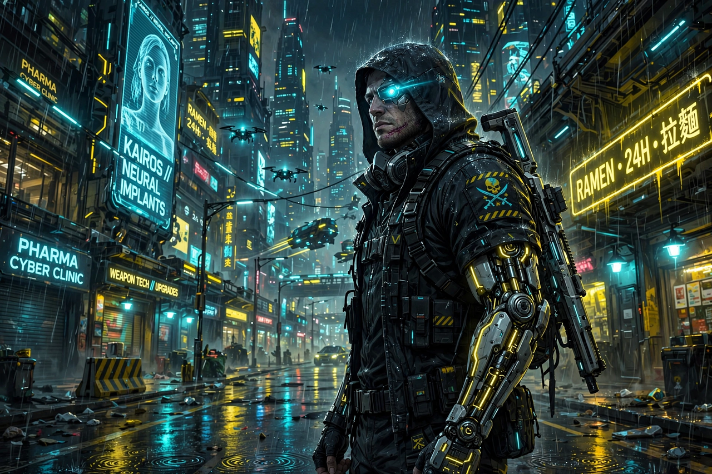

Cyberpunk 2077 is a 2020 action role-playing game developed and published by CD Projekt. The story takes place in Night City, an open world set in the Cyberpunk universe, based on Mike Pondsmith's tabletop role-playing game. Players assume the first-person perspective of V, a customisable mercenary whose life path, skills and cybernetic implants can be configured. The game was announced in 2012 and released for PlayStation 4, Stadia, Windows and Xbox One on 10 December 2020, with PlayStation 5 and Xbox Series X/S versions released in February 2022.

| Developer | CD Projekt Red |
|---|---|
| Publisher | CD Projekt |
| Director | Adam Badowski |
| Release | 10 December 2020 |
| Genre | Action role-playing |
| Engine | REDengine 4 |
V, a mercenary for hire, becomes host to the digitised consciousness of the deceased rockerboy-terrorist Johnny Silverhand (voiced by and modelled on Keanu Reeves), whose engram on a stolen biochip is slowly overwriting V's mind. Players explore six districts of Night City and the surrounding Badlands, completing main quests and side jobs, augmenting V with cyberware and choosing between combat, stealth and hacking approaches. Dialogue choices and quest decisions lead to multiple endings.
Developed by a team that grew to over 500 people, the game adapts Pondsmith's Cyberpunk 2020 setting; Pondsmith served as a consultant. A 2018 gameplay reveal and Reeves's appearance at E3 2019 made it one of the most anticipated games of its generation. Its launch was marred by widespread technical problems, especially on the base PlayStation 4 and Xbox One consoles; Sony removed the game from the PlayStation Store for six months, and CD Projekt offered refunds and faced lawsuits. Despite this, the game sold more than 13 million copies by the end of 2020.
Major patches, the 2022 next-generation update, the acclaimed Netflix anime series Cyberpunk: Edgerunners (2022) and the expansion Phantom Liberty (2023), starring Idris Elba, substantially rehabilitated the game's reputation; cumulative sales surpassed 25 million copies by 2023 and reviews of the 2.0 update were broadly positive.